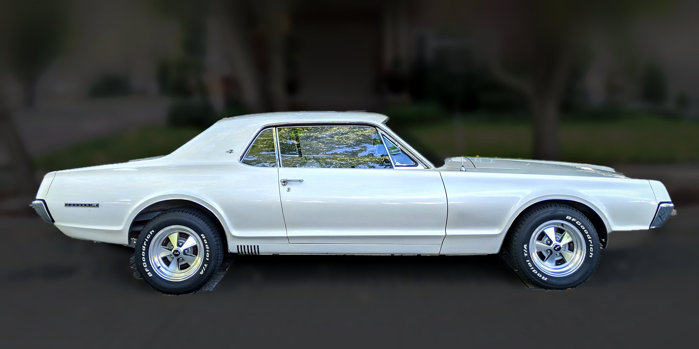
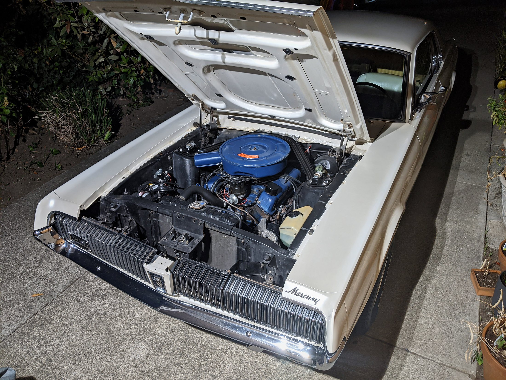
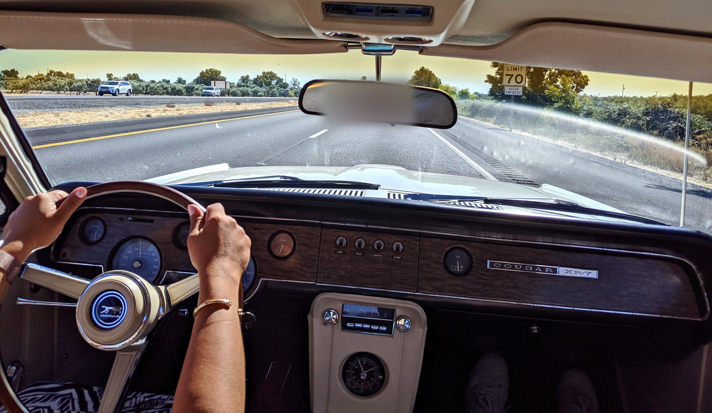

Purchased new in Oregon by an electrical engineer who kept it for nearly five decades, this 1967 Cougar XR-7 passed to Don Rush, owner of West Coast Classic Cougars, who used it as a daily driver and shop car. It has been with its current Northern California owners since 2019, a family that runs a long-standing automotive body shop.
The Car
Mercury built the Cougar as the more refined cousin of the Mustang, and the XR-7 sat at the top of the 1967 line. It brought simulated wood trim, leather-trimmed bucket seats and a full instrument cluster with tachometer. Hidden headlamps, sequential rear turn signals and the long hood gave it the look that still sets it apart.
This example is a first-year car without the vinyl roof, which makes it a less common sight. It is powered by a 289-cubic-inch two-barrel V8 with a C4 automatic, power steering, power front disc brakes and dual exhaust. The 289 is known for smooth running and good fuel economy for a car of its era.

Ownership History
-
1967
Original owner, Oregon
An electrical engineer bought the Cougar new and used it to travel between dam projects across the West, putting roughly 320,000 miles on the car by the time West Coast Classic Cougars featured it. He maintained it himself, using his professional knowledge on the wiring, lighting and mechanical systems. The car arrived at the shop with a single, heavily worn shop manual rather than a stack of invoices. In the early 2000s he rebuilt the engine, restored the interior and repainted the car from Mercury Green to pearlescent white. The finished car won several local awards.
-
2014–19
Don Rush, West Coast Classic Cougars
After the original owner passed away, the car went to his close friend and advisor Don Rush, who had helped source parts and restore elements of the Cougar over the years. Rush is the owner of West Coast Classic Cougars, a well-known resource for Cougar owners, parts and restoration advice. The Cougar, nicknamed “Pearl,” served as a shop mule and daily driver for about five years, used for test-fitting parts and filming how-to videos. Rather than a sterile restoration, the goal was to keep it a reliable, driver-quality car. The shop replaced the sagging leaf springs to cure the classic Cougar driver-side lean, repaired the dash, restored the steering wheel, rebuilt the Rallye clock and added projector-beam halogen headlights and one-off milled wheels. The car has been featured in news publications and on Rush’s YouTube show.
-
2019
Current owners, Northern California
Don Rush sold the Cougar in 2019 to its current owners, who run a long-standing, top-tier automotive body shop in Northern California. They are long-time enthusiasts who value the car’s history and have continued to look after it.
A history that connects two passionate owners, an engineer and a Cougar expert, and decades of craftsmanship and care.
From the Shop That Knew It Best
Don Rush talks through this exact car, “Pearl,” in the video below, including its history and how West Coast Classic Cougars used it.
Condition: A Driver’s Car
This is an unrestored, well-used Cougar that has been driven and enjoyed for decades, not a trailer queen. It has the typical rust spots of an unrestored car of this age, and the undercarriage photo in the gallery shows the car as it is. The condition in Don Rush’s video above is accurate and long-standing. Mechanical work has been kept up, as the list below shows, and the car is described as dependable and ready for a road trip. Buyers are welcome to ask for more photos or detail shots of any area.
Recent Work
- Rebuilt C4 automatic transmission
- Radiator
- Fuel pump
- Front springs and shocks, plus front shock tower braces
- Rear springs
- Rechromed rear bumper
- Restored original steering wheel
- Rebuilt original Rallye clock
- Projector-beam halogen headlights
- Engine rebuilt, interior restored and repainted in the early 2000s

Interior
The matching white interior features the XR-7’s woodgrain-style dash, a full gauge cluster with tachometer and the restored original steering wheel. The Rallye clock has been rebuilt.

Documentation
The car is sold with its documentation and service records.
Terms
The asking price is $25,000 OBO. Trades and payment arrangements will be considered. The seller is especially interested in trades for German-made collector vehicles of similar condition. Contact the seller for more information or additional photos.